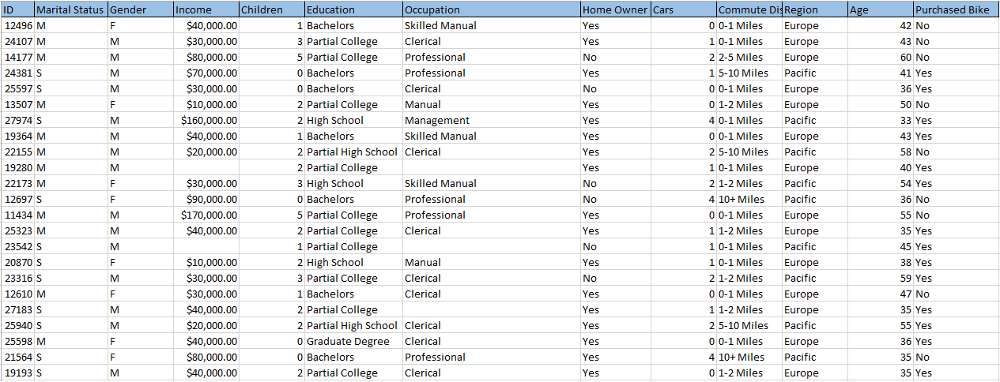
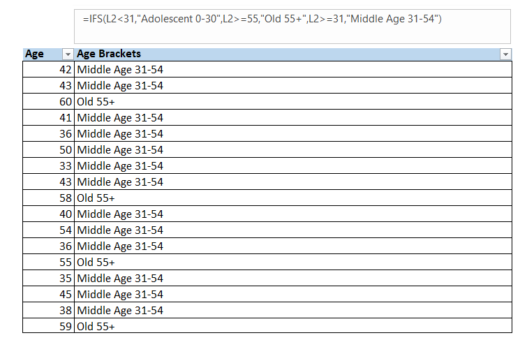

Bike Market Dynamics: Advanced Analytics for Informed Sales Strategies
Project Description:
The analysis of bike sales data reveals key insights into market dynamics, with a focus on regional sales, gender-based income differences, age demographics, education patterns, and occupation preferences. The project aims to answer strategic business questions, providing valuable insights for informed decision-making and future planning.
Key Steps:
Data Exploration:
The analytical process began with familiarizing myself with the structure and variables of the dataset comprehensively through data exploration. The general structure of the data and the relationships between variables were analyzed in detail to understand how the data is built and the associations between variables.

Data Cleaning:
Dealing with missing values using statistical methods such as mean imputation for numeric data and mode imputation for categorical data was crucial to ensure accurate analysis.
Data Transformation:
Transforming the 'Income' column into a currency data type to facilitate financial analysis and visualization.

Categorization and Labeling:
Categorized variables such as age brackets and education levels for clearer analysis and interpretation, introducing labels like "Middle Age 31-54" and "Old 55+" for better segmentation.
Formulation of Data Analysis Questions:
Developed focused questions aimed at extracting meaningful insights from the dataset, covering key aspects like regional sales, gender-based income differences, age demographics, education patterns, and occupation preferences.

Technical Details:
Microsoft Excel:
The analysis was meticulously executed using Microsoft Excel for data cleaning, analysis, and dashboard design.
Data Visualization Development:
Designed a dashboard overview with a variety of charts and graphs, including bar charts for regional sales, pie charts for gender distribution, and line graphs for age demographics. These visualizations served as a powerful means to convey key findings.

Insights Extraction:
Extracted insights from the data, identifying patterns, trends, and correlations that directly addressed the formulated questions.
Informed Regional Strategies:
The identification of North America's dominance in sales guided strategic decision-making for regional expansions.
Targeted Age Group Marketing:
Focused marketing efforts on middle age brackets based on their significant contribution to sales.
Strategic Occupation-Based Offerings:
Developed tailored product offerings for professionals, considering their higher purchasing power.
Gender-Neutral Marketing:
Implemented inclusive marketing strategies that resonate with both genders.
Recommendations for Future Actions or Improvements:
Outlined actionable recommendations based on insights, such as expanding regional strategies, deeper understanding of middle age demographics, and continuous monitoring of market trends.
Conclusion:
Concluded with a summary of key insights and their implications for strategic decision-making in sales and marketing.
For a detailed review of the entire dashboard and dataset, please visit the project's repository. View Code on GitHub